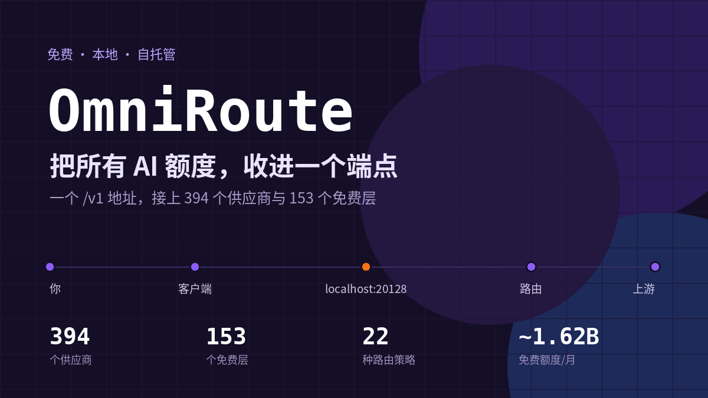
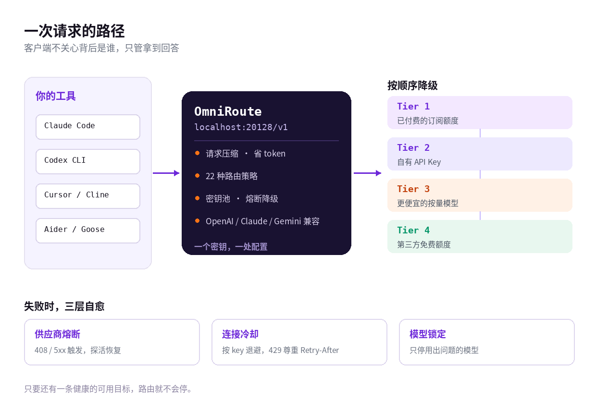
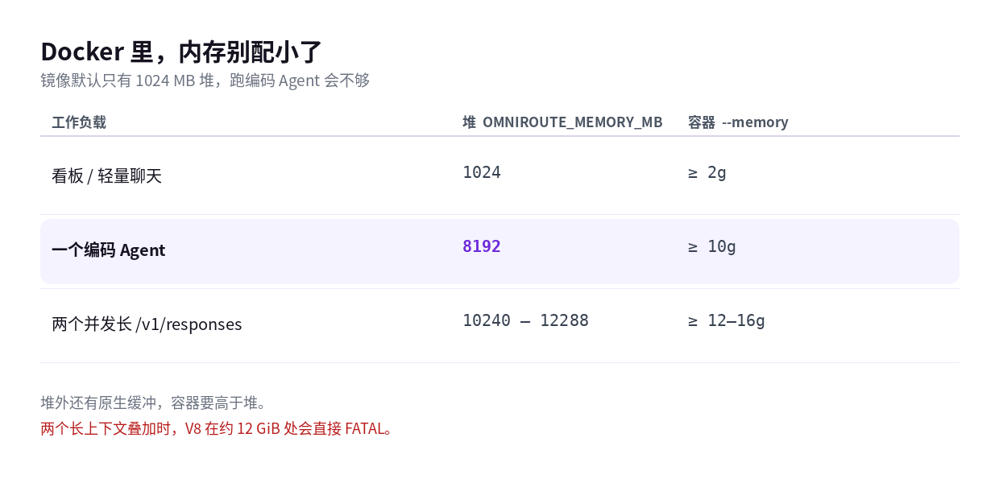
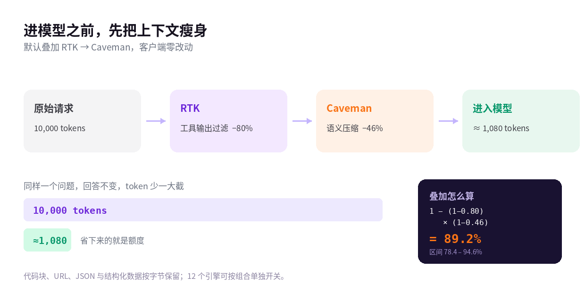

上周三凌晨一点，我还在改一个 bug。Claude Code 里那条报错刚复现，界面弹出一行红字：额度用尽，请稍后再试。切到 Cursor，它走的是另一个账号；再打开一个终端跑脚本，用的是第三把 key。三个订阅、五把 API key，散在四五个面板里，谁还能用、谁什么时候重置，我根本记不住。
真正打断思路的，从来不是模型不够强。是"这个又用不了了"。
所以看到 OmniRoute 的时候，我认真读了一遍它的 README。它给自己的定位叫 "The Free AI Gateway"——免费 AI 网关。名字有点大，但拆开看，它想解决的事很具体。

OmniRoute：把所有 AI 额度收进一个本地端点
01 它解决的，是额度碎片化
先别被官网那串数字晃到眼。它的项目页上写着：394 个供应商、153 个被目录标记为免费的供应商、1491 个不重复的对话模型 ID、465 条免费额度记录，汇总起来大约 1.62B tokens / 月 的第三方免费额度。
这里必须说清楚：这些额度不是它送给你的。它们来自各家自己的免费层，你得用自己的账号、邮箱、有时还得绑卡，一个个去注册和授权。OmniRoute 不生产额度，它做的是把这些零散的、各自有重置规则的额度，变成一个可以统一调度的池子。
这件事听起来不酷，但很要命。一个人手上往往同时有：公司配的订阅、自己买的另一个订阅、某个平台的赠金、几个注册就送的免费 key。平时各管各的，忙起来只记得最顺手的那一个，其余的额度到期清零，一分没用上。
OmniRoute 的做法很直接：在本机跑一个网关，所有客户端都打到同一个地址，由它决定这一次请求走谁。第一个没额度了就换第二个，第二个限流了换第三个。
02 一次请求要经过什么
把链路摊开看，结构其实不复杂：左边是你的编辑器或命令行，中间是本机的 OmniRoute，右边是按优先级排好的四档上游。

四档降级阶梯：订阅额度 → 自有 API Key → 便宜按量 → 第三方免费额度
四档的顺序是码农最熟悉的优先级：先把已经付过钱的订阅用满，再用自己的 API Key，然后才轮到更便宜的按量模型，最后才是第三方免费额度。不是"哪个免费先用哪个"——那样只会把稳定但有限的额度浪费在能花小钱解决的事情上。
网关本身还承担三件事：请求压缩（下一节讲）、路由策略、以及失败时的自动降级。对客户端来说，这些都不存在，它只看到一个 OpenAI 兼容的 /v1 端点。
03 装起来：一条 npm 命令
它是 Node 生态的项目，全局安装后直接运行：
npm install -g omniroute
omniroute
起来之后，看板在 http://localhost:20128，API 在 http://localhost:20128/v1。整个服务默认只监听本地，密钥用 AES-256-GCM 加密存在本地库里，不经过别人的云。
这里有一个现在很常见的坑：npm 11 之后默认会拦截依赖的生命周期脚本，而 OmniRoute 的 postinstall 需要跑一段原生运行时准备。安装时如果看到脚本被 block 的警告，把对应的包名放行即可：
npm install -g --allow-scripts=omniroute,keytar,onnxruntime-node,@parcel/watcher,@swc/core,protobufjs,esbuild omniroute
不想动全局 Node 环境，Docker 更省心：
docker run -d --name omniroute --restart unless-stopped --stop-timeout 40 \
-p 127.0.0.1:20128:20128 -v omniroute-data:/app/data \
diegosouzapw/omniroute:latest
但 Docker 这里有个必须提前知道的细节：镜像默认只给了 1024 MB 的 V8 堆。看看板、聊两句够用，跑编码 Agent 就不够了。

堆之外还有原生缓冲，容器的 --memory 要高于堆
README 写得很直白：两个并发的长上下文请求叠加时，进程会在 12 GiB 附近直接 FATAL。所以要跑一个编码 Agent，至少这样起：
docker run -d --name omniroute --restart unless-stopped --stop-timeout 40 \
-e OMNIROUTE_MEMORY_MB=8192 --memory=10g \
-p 127.0.0.1:20128:20128 -v omniroute-data:/app/data \
diegosouzapw/omniroute:latest
另外还有 Bun、pnpm、源码、Arch AUR 几种装法，篇幅关系不展开，本质上都是同一个服务换个壳。
04 接一个供应商，把工具指过来
装完只是有了壳，里面还是空的。去 Dashboard 的 Providers 页，挑一个当前条款和额度适合你的供应商，填 key 或者走它的账号授权流程。免费层有的要注册、有的要审批、有的要绑卡，这些步骤绕不过去。
接好之后，把你的编码工具改成三行配置：
Base URL: http://localhost:20128/v1
API Key: [从 Dashboard → Endpoints 复制]
Model: auto
模型填 auto 就够了。不用先建组合、不用列清单，它会根据你已连接的供应商实时打分，挑一条当前健康的路径。想偏科一点，还有 auto/coding（代码质量优先）、auto/fast（低延迟）、auto/cheap（便宜优先）、auto/offline（额度余量优先）。
验证一下：
curl http://localhost:20128/v1/models -H "Authorization: Bearer YOUR_KEY"
能列出模型，就通了。如果某个客户端死活不支持自定义 header，它还提供了把 key 写进路径的兼容地址，比如 /vscode/YOUR_KEY/chat/completions，以及 Ollama 风格的 /api/chat。官方也明确说了，这只是兜底，带 header 才是首选方式——把 key 写在 URL 里，日志和截图都会泄露。
它还把 39 个常见 CLI 和 Agent 的启动参数包了一层，一条命令就能带着配置启动：
omniroute run claude --model openai/gpt-5.4
omniroute run codex --model glm/glm-5.2
对同时用 Claude Code、Codex、Aider 的人来说，这省掉的是每个工具各配一遍 base URL、各存一份 key 的重复劳动。
05 路由与降级：它凭什么说"别停"
"Never stop coding" 这种口号我一般是不信的。但它的降级设计确实值得看一眼，因为它区分了三种不同粒度的失败。
第一层是供应商熔断。只在 408 和 5xx 这类明确的故障上触发，OAuth 连接要连续失败 8 次、API key 连接 12 次、本地连接 2 次才断开。断开后等待 60 / 30 / 15 秒，再放一个试探请求进 HALF-OPEN 状态。这比"错一次就拉黑"克制得多。
第二层是连接冷却。针对单个 key 或账号，基础 5 秒 / 3 秒，指数退避，遇到 429 会尊重上游返回的 Retry-After。一个 key 在冷却时，同一供应商的其他 key 还能继续服务。
第三层是模型锁定。某个模型返回 429 或 404，只锁这个模型，不牵连整条连接。
还有一条我很认同的设定：被封号、额度过期、余额耗尽这类终止态，不会被当成临时故障自动绕过。它们需要人来处理。把死号当限流反复重试，只会让情况更糟。
再往上是 22 种路由策略，可以按组合混搭。常用的几类：按优先级依次耗尽（priority）、填满一个再换下一个（fill-first）、按余额比例分配（quota-weighted）、按剩余额度最多优先（headroom）、先烧即将过期的额度（expiry-first）、以及给每个可复用前缀钉住同一个账号以提高缓存命中（cache-optimized）。
其中最特别的是 auto/subscription：只用你已经付过钱的订阅额度，额度耗尽就失败，绝不降级到会额外计费的路径。README 的原话是 fails closed，never a billable fallback。这个设计说明作者知道付费用户最怕什么——不是请求失败，是月底收到一张没预期的账单。
06 压缩：省 token 就是省额度
额度不够用的另一半原因，是上下文本身太肥。跑一次测试，终端吐出几百行日志；读一个文件，整段源码进了对话；工具调用一来一回，上一轮的输出又被完整带上。这些内容大部分对下一步没有信息量，但每一轮都在计费。
OmniRoute 在请求进上游之前插了一层压缩，目前是一套 12 个可组合引擎的流水线。默认叠的是 RTK → Caveman：前者按命令类型过滤、去重、截断工具输出，后者做规则化的语义压缩。

10,000 tokens 的示例请求，经过两级压缩后约剩 1,080
两级同时生效时，省下的比例不是简单相加，而是这样算：
combined = 1 - (1 - RTK) × (1 - Caveman_input)
average = 1 - (1 - 0.80) × (1 - 0.46) = 89.2%
range = 78.4% - 94.6%
README 给了一个很直观的例子。原回答 69 个 token，压缩后 19 个：
"New object ref each render. Inline object prop = new ref = re-render. Wrap in useMemo."
意思没丢，话短了一多半。这也是我认为这套压缩最合理的地方：它主要压缩的是冗余表达和工具噪音，而不是把技术细节揉碎。代码块、URL、JSON 和结构化数据会被按字节保护，不参与有损变换。
强度是可以调的。Lite 大约省 15%，Standard（Caveman）约 30%，Aggressive 约 50%，Ultra 约 75%，单开 RTK 在工具输出场景能到 60–90%。也可以用请求头临时指定，响应头会回显实际用了哪种模式，方便你核对：
x-omniroute-compression: standard
X-OmniRoute-Compression: standard; source=header
我的建议是别一上来就拉满。大型代码库、长链路调试这类任务，激进压缩带来的信息损失可能要花更多轮次去补，反而更贵。先用 Standard 跑几天，看话有没有变笨。
07 先把边界说清楚
这个项目 README 写得非常"营销"，数字一个比一个大。但里面也藏了不少诚实的注脚，装之前值得先看：
一、1.62B 不是你的额度。它是把几十个第三方免费层按文档汇总出来的理论上限，前提是你自己把这些账号都注册、授权、用满。实际到手多少，取决于你愿意折腾多少家、各家规则又改了多少。
二、新装可能没有可用路由。auto 需要至少一条合格的连接。官方特别提醒：全新安装可能没有任何可用的 keyless 目标，而某些 keyless 供应商也会拒绝第三方客户端。所以第二步"接一个供应商"不是可选项。
三、有些供应商默认不进自动路由。被标记为 tos: avoid 的（比如 Kiro）会排除在 auto 之外，你手动连了账号也不会改变这个设置。这个限制是刻意的，别想着绕。
四、Docker 默认内存不够跑 Agent。这一点前面已经说过，但它是实际踩坑率最高的一条。看板能开、轻聊能用，不代表 Claude Code 能跑。
五、免费额度随时会变。第三方的免费政策、限流阈值、是否需要绑卡，都不是 OmniRoute 能控制的。今天能用的池子，下个月可能就缩了。
想清楚这五条，再判断它适不适合你。
我的判断是：如果你本来就有多个订阅、多把 key，或者愿意花一个下午把几家免费层注册齐，它很值——它把"记住哪个还能用"这件破事从你脑子里拿走了。如果你只有一把 key、一个订阅，那它带来的收益有限，反而多了一层需要维护的本地服务。
另外，它毕竟是本地网关，你的 key 和 prompt 都从本机发出。介意这一点的团队，至少确认一下它的密钥存储和日志策略再上。
真正贵的不是 token。
是你写着写着，被一句"额度不足"打断。
OmniRoute 没有让模型变强，也没有凭空生出额度。它只是把散落的资源收拢，让一次请求在失败之前，还有下一条路可走。对每天要跟 AI 一起写几小时代码的人来说，这点确定性，比多送你一百万 token 更实在。
相关链接
GitHub：github.com/cheaper-inference/OmniRoute
npm：npmjs.com/package/omniroute
Docker：diegosouzapw/omniroute
项目为 MIT 协议，文中数字与行为描述均来自其 README，随版本可能变化，以仓库最新说明为准。